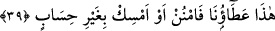
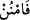
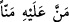
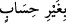
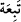

vermek sûretiyle Süleyman’ın (a.s.) duâsını kabul buyurmuştur. Çünkü anlatıldığına
göre, Süleyman (a.s.), babası Dâvûd’un hükümdarlığına Keyhusrev b. Siyavuş
zamanında mîrasçı olmuştur. Şam’dan (bugünkü Suriye) Irak’a doğru yürüdüğünde
durum Keyhüsrev’e iletilince Keyhüsrev Horasan’a kaçmış ve çok geçmeden orada
helâk olmuştur. Sonra Merv’e doğru hareket eden Süleyman (a.s.) buradan Türk diyarı
üzerine yürümüştür. Ülkenin içlerine doğru iyice girdikten sonra Çin’den geçmiş ve
daha sonra geri dönüp İran’ı baştan aşağı geçerek burada bir müddet kalıp Suriye’ye
avdet etmiştir. Beyt-i Makdis’in inşasını da bundan sonra emretmiş ve inşası sona
erince de önce Tihâme’ye, buradan da San’â’ya geçmiştir. San’â’nın kraliçesiyle
yapmış olduğu ve Allah Teâlâ’nın Kitâb-ı Kerîm’in de anlatmış olduğu muhâvere bu
esnâda cereyan etmiştir. Süleyman (a.s.), ayrıca Mağrib ülkeleri Endülüs, Tanger
(Tanca), Frank diyarı ve çevre şehirlere de akınlar düzenlemiştir.
39. “İşte bu bizim bağışımızdır. İster ver, ister (elinde) tut; hesapsızdır” dedik.
‘Boyun eğdirdik’ ve “İşte bu” Sana vermiş olduğumuz bu büyük hükümranlık,
genişlik ve senden başka hiç kimsenin sâhip olmadığı güç, senden başkasının gücünün
yetmeyeceği sadece sana özgü “bizim bağışımızdır. İster ver, ister (elinde) tut;
hesapsızdır” dedik.
(__WORD__) lâfzı, birisi birine ihsanda bulunduğu zaman kullanılan (__WORD__) fiilinden olup
mânâsı şöyledir: Dilediğine hesapsız olarak ihsân edebilir, dilediğinden de
esirgeyebilirsin.
Hesapsız olarak (__WORD__) ifâdesi, emirde gizli zamirden hal olup ‘yaptığın ihsân
veya esirgemeden sorumlu tutulmamak üzere’, demektir. Verdiğinde niçin verdin;
vermediğinde de niçin vermedin şeklinde bir sorgulamayla karşılaşmayacaksın. Çünkü
bu hükümranlık sınırsız olarak senin emrine âmâde kılınmış bulunuyor.
Bu ifâde, el-Müfredât’ta şöyle açıklanır: “Bu verdiklerimizde hesaba çekilmeyecek
birinin tasarrufu gibi istediğin her tasarrufta bulunabilirsin. Bu mülkle ilgili olarak
istediğin zaman istediğin hususta istediğin gibi davranabilirsin.
Hasan-ı Basrî (r.h.) der ki: “Allah’ın nimetlendirdiği hiçbir kimse yoktur ki, bu
nimetin peşinden bir felâket ve soruşturma (tebi’a) gelmesin. Bu hükmün tek istisnâsı
Süleyman (a.s.)’dır. Verdiği zaman ecir almakta, esirgediği zaman da günaha girmiş
olmamaktadır. Bu durum da ona özgü şeylerdendir.”
(__WORD__), bir şey üzerine terettüp edip kesinleşen zarar ile mazlumun, zâlimin kendisine
yapmış olduğu haksızlığa karşılık ondan alacağı hakka denir.
Muhakkık büyüklerden biri şöyle der: “Süleyman’ın (a.s.) bu isteği Rabbinin